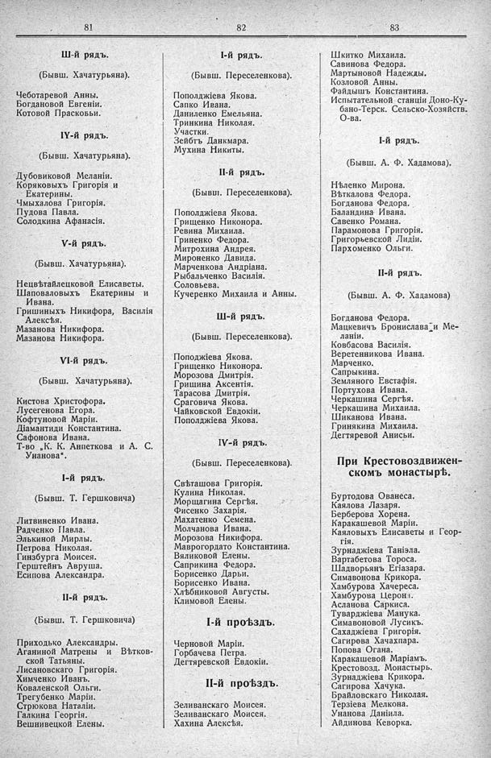

Лист источника 533
Скан

Распознанный текст
81
III-й рядъ.
(Бывш. Хачатурьяна).
Чеботаревой Анны.
Богдановой Евгеніи.
Котовой Прасковьи.
IY-й рядъ.
(Бывш. Хачатурьяна).
Дубовиковой Меланіи.
Коряковыхъ Григорія и
Екатерины.
Чмыхалова Григорія.
Пудова Павла.
Солодкина Афанасія.
V-й рядъ.
(Бывш. Хачатурьяна).
Нецвѣтайлецковой Елисаветы.
Шаповаловыхъ Екатерины и
Ивана.
Гришиныхъ Никифора, Василія
Алексѣя.
Мазанова Никифора.
Мазанова Никифора.
VI-й рядъ.
(Бывш. Хачатурьяна).
Кистова Христофора.
Лусегенова Егора.
Кофтуновой Маріи.
Діамантиди Константина.
Сафонова Ивана.
Т-во „К. К. Анпеткова и А. С.
Унанова“.
I-й рядъ.
(Бывш. Т. Гершковича)
Литвиненко Ивана.
Радченко Павла.
Элькиной Мирлы.
Петрова Николая.
Гинзбурга Моисея.
Герштейнъ Авруша.
Есипова Александра.
II-й рядъ.
(Бывш. Т. Гершковича)
Приходько Александры.
Аганиной Матрены и Вѣтков-
ской Татьяны.
Лисановскаго Григорія.
Химченко Иванъ.
Коваленской Ольги.
Трегубенко Маріи.
Срюкова Наталіи.
Галкина Георгія.
Вешнивецкой Елены.
82
I-й рядъ.
(Бывш. Переселенкова).
Пополджіева Якова.
Сапко Ивана.
Даниленко Емельяна.
Тринкина Николая.
Участки.
Зейбтъ Данкмара.
Мухина Никиты.
II-й рядъ.
(Бывш. Переселенкова).
Пополджіева Якова.
Грищенко Никонора.
Ревина Михаила.
Гриненко Федора.
Митрохина Андрея.
Мироненко Давида.
Марченкова Андріана.
Рыбальченко Василія.
Соловьева.
Кучеренко Михаила и Анны.
III-й рядъ.
(Бывш. Переселенкова).
Поподжіева Якова.
Грищенко Никонора.
Морозова Дмитрія.
Гришина Аксентія.
Тарасова Дмитрія.
Сраговича Якова.
Чайковской Евдокіи.
Пополджіева Якова.
IV-й рядъ.
(Бывш. Переселенкова).
Свѣташова Григорія.
Кулина Николая.
Морщагина Сергѣя.
Фисенко Захарія.
Махатенко Семена.
Молчанова Ивана.
Морозова Никифора.
Маврогордато Константина.
Вяликовой Елены.
Саприкина Федора.
Борисенко Дарьи.
Борисенко Ивана.
Хлѣбниковой Августы.
Климовой Елены.
I-й проѣздъ.
Черновой Маріи.
Горбачева Петра.
Дегтяревской Евдокіи.
II-й проѣздъ.
Зеливанскаго Моисея.
Зеливанскаго Моисея.
Хахина Алексѣя.
83
Шкитко Михаила.
Савинова Федора.
Мартыновой Надежды.
Козловой Анны.
Файдышъ Константина.
Испытательной станціи Доно-Ку-
бано-Терск. Сельско-Хозяйств.
О-ва.
I-й рядъ.
(Бывш. А. Ф. Хадамова).
Нѣленко Мирона.
Вѣткалова Федора.
Богданова Федора.
Баландина Ивана.
Савенко Романа.
Парамонова Григорія.
Григорьевской Лидіи.
Пархоменко Ольги.
II-й рядъ.
(Бывш. А. Ф. Хадамова)
Богданова Федора.
Мацкевичъ Бронислава и Ме-
ланіи.
Ковбасова Василія.
Веретенникова Ивана.
Марченко.
Сапрыкина.
Земляного Евстафія.
Портухова Ивана.
Черкашина Сергѣя.
Черкашина Михаила.
Шиканова Ивана.
Гринякина Михаила.
Дегтяревой Анисьи.
При Крестовоздвижен-
скомъ монастырѣ.
Буртодова Ованеса.
Каялова Лазаря.
Берберова Хорена.
Каракашевой Маріи.
Каяловыхъ Елисаветы и Геор-
гія.
Зурнаджіева Таніэла.
Вартабетова Тороса.
Шадворьянъ Егіазара.
Симавонова Крикора.
Хамбурова Хачереса.
Хамбурова ЦеронѢ.
Асланова Саркиса.
Туварджіева Манука.
Симавоновой Лусикъ.
Сахаджіева Григорія.
Сагирова Хачахпара.
Попова Огана.
Каракашевой Маріамъ.
Крестовозд. Монастырь.
Зурнаджіева Крикора.
Сагирова Хачука.
Брайловскаго Николая.
Терзіева Мелкона.
Унанова Даніила.
Айдинова Кеворка.